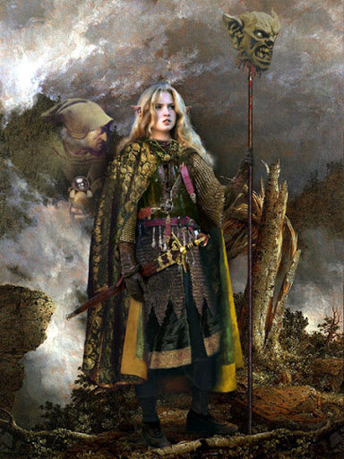

Альвы и Норны
Но́рны — в германо-скандинавской мифологии три женщины, волшебницы.
Имена Норн:
Урд — что значит прошлое или судьба.
Верданди — что значит настоящее или становление.
Скульд — что значит будущее или долг.
Альвы - духи природы
альв корабля
северный альв сельдей битвы
альв битвы
А́львы (др.-сканд. álfar), а́льбы (др.-в.-нем. alben), э́льбы (ср.-в.-нем. Elbe), э́льфы (др.-англ. ælfen) — в германо-скандинавской мифологии духи природы[1], реже классифицируемые как мужские духи предков или род богов. В «Эдде» альвы представляют собою самостоятельную группу мифологических полубожественных существ, наиболее близко стоящую к богам-асам, а также двергам. Под влиянием кельтов на основе представлений об альвах развились сказания об эльфах. Но́рны — в германо-скандинавской мифологии три женщины, волшебницы, наделенные чудесным даром определять судьбы мира, людей и даже богов. Являются гранью транскультурного образа мойр. Имена Норн: Урд — что значит прошлое или судьба. Верданди — что значит настоящее или становление. Скульд — что значит будущее или долг. Норны живут возле источника Урд, в Мидгарде. Они поливают корень мирового дерева Иггдрасиль водами этого источника и тем продлевают его существование. В сказаниях они изображались как три женщины, одна старая и дряхлая (Урд), другая — средних лет (Верданди), третья же совсем юная (Скульд). Один несколько раз обращался к норнам за советом, также норны иногда сами предсказывали грядущее.
